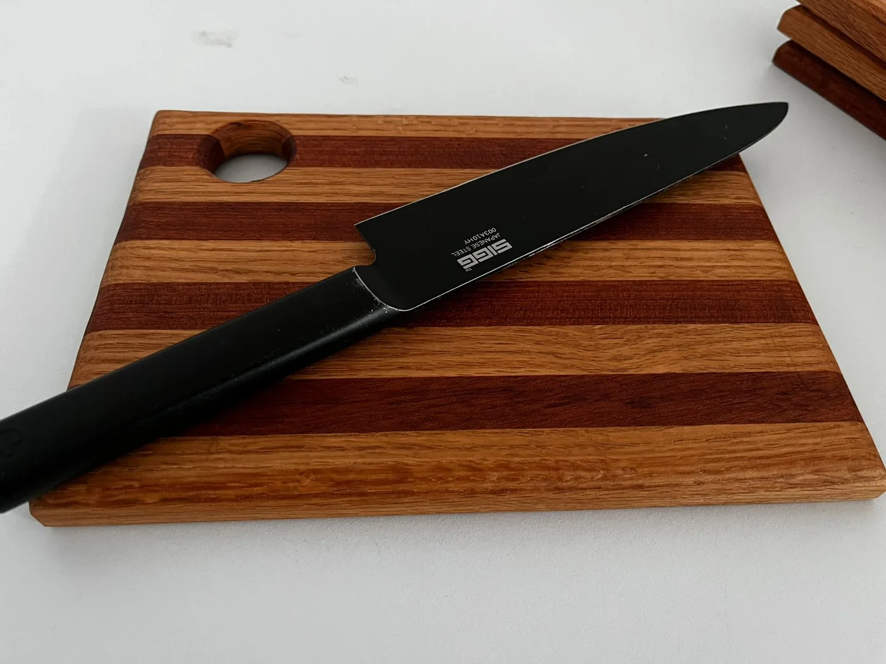
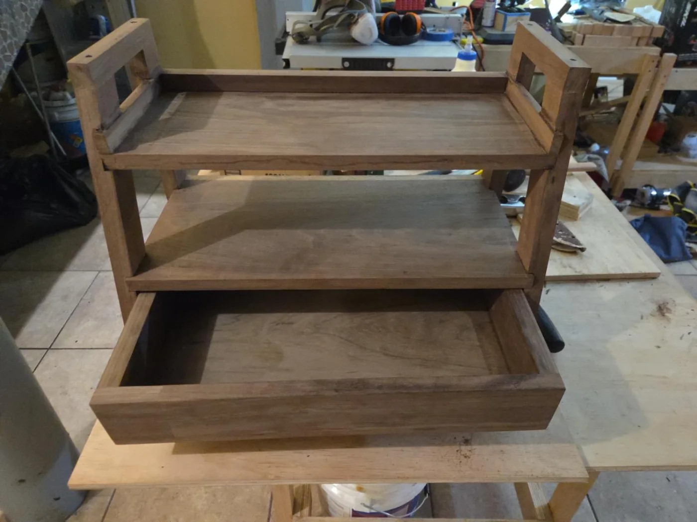

Taller de madera · Ciudad de México
Madera, diseño
y vida cotidiana.
Piezas para tu cocina. Muebles para tu espacio.
Diseñamos y fabricamos en madera para acompañar tu día a día.
Cocina & grill / Muebles / Montessori

Explora nuestras líneas
Una pieza para cada espacio.
Una selección del taller
Piezas para conocer.
Cargando piezas…

Hecho en taller · CDMX
La madera toma forma.
Somos CRJ Muebles. Diseñamos y fabricamos piezas para la cocina, muebles y proyectos personalizados. Aquí puedes ver las piezas, acercarte a sus detalles y conversar directamente con el taller.
Conocer el especiero →Muebles & proyectos a la medida
¿Tienes una
idea diferente?
Un rincón por aprovechar, un mueble que imaginas o una pieza especial. Cuéntanos qué necesitas y conversemos sobre tu proyecto.
La conversación empieza por WhatsApp.
De tu idea a la conversación
Empecemos por lo que necesitas.
¿Qué envío para cotizar un mueble?
Cuéntanos para qué lo usarás, las medidas del espacio y la pieza que te interesa. Puedes compartir una fotografía o una referencia por WhatsApp.
¿Puedo consultar otras medidas o acabados?
Sí. Envíanos tu idea para revisar las opciones del proyecto. Materiales, medidas y acabado se confirman al cotizar.
¿Cómo confirmo precio, disponibilidad y entrega?
Desde la ficha pulsa Consultar por WhatsApp. El mensaje lleva la pieza y su enlace para que podamos conversar sobre sus detalles. Las piezas sin precio publicado se cotizan por ese medio.
Encuentra tu próxima pieza.
Explorar el catálogo ↗CRJ en tu dispositivo
El taller, siempre a mano.
Instala la app para volver al catálogo y consultar las piezas que ya has visitado, incluso sin conexión.